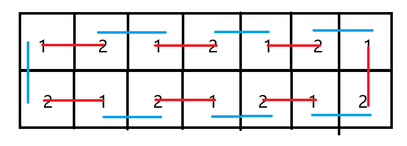

CFdiv2 一句话题解合集
First Post:
Last Update:
Last Update:
CF 一句话题解。
已更新：CF1695。
CF1695 一句话题解#
- CF1695A 考虑最大数的位置，那么答案一定是它左上左下右上右下的四个矩形中面积最大的那个。
- CF1695B 如果石子的堆数
是奇数，那么 Joe 在第 轮会第一次将要之前被取过的石子堆中取走石子，而这堆石子恰巧是被 Mike 取走过一次的，因此 Mike 必胜。否则两人要取石子的石子堆是不交的，直接考虑即可。 - CF1695C 可以发现从
到任何一个点的距离，忽略最后一个二进制位的话是一个区间。那么直接预处理 到所有点距离的最大最小值即可。 - cF1695D1/D2 可以发现一个结论：一个点集
能确定树上的所有点，当且仅当对于任意一个度数不小于 的点，如果把它当做根，只有一个其的子树中不存在 中的点。有一个直接推论：被选取的点子有可能是叶子。那么直接找一个度数不小于 的点开始 dfs 计算答案即可。 - CF1695E 观察合法的构造中不同的矩形中相同的两个连通块，可以发现成这种形式：，其中红线代表第一个矩形中由同一个多米诺骨牌覆盖的格子，蓝线则代表第二个矩形中的。将骨牌看做联系两个数字的边，那么一个连通块可以看做是一条经过每条边两次的路径，路径上奇偶交错的边被分别分到第一个矩形和第二个矩形中。那么直接在 dfs 树上欧拉遍历，经过返祖边的时候立刻走一个来回即可。